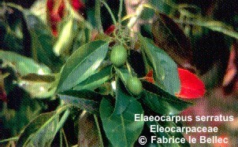

|
ECONOMICALLY
IMPORTANT PLANTS OF INDIA |
| Under-utilized Food and Fodder species and their wild relatives | Contributed by Ms.M.L Annapurna And Dr. Dhanapal, UAS, Bangalore |
Elaeocarpus serratus L.
Taxonomic
Details

----- Correct Name
----- Classification
----- Synonyms
----- Common Names
Other Biological Details
----- Habit and Habitat
----- Diagnostic Features
----- Reproductive Biology
---------- Breeding System
---------- Phenology
---------- Pollinators
---------- Seed Biology
----------Seed Germination
----- -Cultivation
----- Major Pests and Diseases
Economic Potential and Uses
----- Parts Used
----- Uses
----- Harvesting Practices
----- Produce and Products
----- Chemistry
----- Processing Techniques
----- Other uses
----- Economic Potential to the
Country
----- Export Potential
Miscellaneous Information
Literature
Correct
Name : Elaeocarpus
serratus L.
Family : Elaeocarpaceae
Synonyms : Elaeocarpus cuneatus, Elaeocarpus
oblongus
Common Names :
Hindi: Jalpai,
Bengali: Jalpai,
Malayalam: Avil, Bhadraksham, Kara, Karamava, Karamavu, Kashipal, Nallakara,
Perunkara, Valiyakara
Tamil: Ulangarai, Ulangkarei,Ulangkarie, Uruttiracham, Uttraccham,
Kannada: Beegada mara, Beejada mara, Perinkara
HABIT
& HABITAT:
It
is seen on the Bunds of Fileds, Outskirts of Wet Deciduous forestsin lower ghats,
evergreen forest, semi evergreen forest and
BioticZone: Eastern Himalayas, West Coast, Western Ghats and Western peninsular
India,
Misc: Bhyrapura forests, Gairsoppa falls, Kerekatte, Kotigehar on the way to
Kalhattigiri, Mahaballeshwar, Malleswara forests, Ponmudi, ramghat, Regional
Research Station, Brahmavar, Samse, Silent Valley, Tropical Himalaya,
Tungabhadra state forests, and Kerekatte,
Country: Ceylon, India, Malaya and Sri Lanka.
Zone: East, South and West zone.
State: Karnataka, Kerala,
District: 24 Pargana, Chikmaglore, Dakshin Kannada, Hassan, Jalpaiguri, Kodagu,
Kukri,
Talluk: Mudigere, Palghat and Sawantwadi.
Availability :
Status :
Breeding
System :
Phenology :
The flowering occurs during
January-February and also there are reports of flowering during January-June in
some places.
Pollinators:
Seed Biology :
Seed Germination:
Cultivation:
MAJOR
PESTS & DISEASES
Pests:
Diseases:
Parts
used
Leaf,fruit.
1. Leaf-antirtheumatic,antodote to poison;
2.Fruit-antidysenteric.
Harvesting Practices
Produce and Products
Chemistry
Leaves
gave ellagic acid,myricitria,myricetin and mearnsetin,fruit pulp gave citric
acid and d-galactose.
1.A dictionary of Indian Medicinal Plants,1992,CIMAP,Lucknow,India,pp.185.
2.Sasya
Sahyadri- A CD on Plants of Western Ghats, 2003, K.N. Ganeshaiah.
3.The
wealth of
4.Theodore
Cooke,C.I.E. Flora
of the Presidency of
.jpg){kind=link}